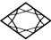
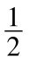
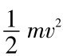

引言爱因斯坦每天都向我讲解他的理论；到我们抵达之时，我最终为他对该理论的理解而折服。 1
——魏茨曼（Chaim Weizmann），对1921年与爱因斯坦横渡大西洋一事的陈述
本书的书名非同寻常，它涉及一个数学方程：
E=mc 2 .
这个方程描述了物质客体的能量E 与质量m 之间的联系，这两个量由约为300 000千米每秒的光速c 联系起来。爱因斯坦于1905年写下的这个著名方程，并不仅仅是那些支撑现代物理学的数学公式之一，而且是我们时代的真正象征。至少对参与第一次原子弹试验的科学家和技术专家们来说，当他们的核装置于1945年7月16日早晨6时许在新墨西哥沙漠起爆时，这一点就清楚了。对世界上其余人而言，几十天之后的1945年8月6日，当广岛的10万人沦为原子弹爆炸的牺牲品之时，这一点也就变得明确了。
从那时起，能量和质量之间关系的后果就以原子弹和氢弹的形式直接或者间接地左右着世界政治。仅仅是由于我们这颗行星上的所有生命也许都会毁于这些炸弹的这种可能性，使得我们拥有了从1945年至今这么一段长期没有发生过全球性战争的岁月。拥有核武器的国家代之以相互监督，保持一种非稳定的平衡。
要想判断这种均衡能够维持多久，以及这种潜在的全球毁灭的威胁是否会最终迫使全世界裁军，还为时过早。一个没有战争，亦即没有原子战争的世界也许最终成为可能。这乃是历史的嘲讽。因为我们已经认识到，另外一种选择不会像我们所知的这个世界这样把战争当作国际政治的一种合法手段，而是根本不存在什么世界 。
20世纪的开端是以世界性的政治变革为标志的，这场变革导致了19世纪后期表面上井然有序的资产阶级世界的破坏。这些变革包括一场有组织的革命运动在俄罗斯兴起，美利坚合众国经济和政治地位的提高，以及欧洲潜在的大规模对抗的出现（它最终导致了第一次世界大战的爆发）。有趣的是，科学上一场革命性的反思也始发于大致相同的时间。这是由一位相当保守的德国物理学家普朗克（Max Planck）和伯尔尼瑞士专利局的一位名叫爱因斯坦的年轻雇员引起的，前者奠定了量子理论的基础，从而有了现代原子物理学。
接近19世纪末期，自然科学由经典物理学主宰，其巅峰即是牛顿的力学定律。这些定律曾被看作普遍地适用于我们的整个宇宙，它们支配着恒星、行星和原子的运动。牛顿力学的基础是质量的稳定性和永恒性。按照牛顿学说，空间和时间都是确定的绝对结构。
爱因斯坦的相对论，或者严格些说狭义相对论（special theory of relativity），具有一些令人惊奇的结果。［他的广义相对论（general theory of relativity），大约于1915年提出，主要是处理引力问题，不在此书讨论。］无论是空间还是时间，都不是普遍适用的概念，两者都取决于观察者的物理状况。而且，质量概念不再具有普遍意义：质量能够转变为能量，反之亦然。
那种转变是由爱因斯坦方程E=mc 2 来描述的。这个方程表示的是，每一个物质单元都存在着相应的巨大能量，量值是由其相应的质量乘以光速c 的平方得到的。
可以用下面的例子来表明这种能量是何等巨大：一辆以180千米每小时（也就是50米每秒）的速度行驶的小轿车，它所具有的动能是

乘以质量m 再乘以速度v 的平方，即
。而按照爱因斯坦的公式E=mc 2 ，小轿车的质量所对应的能量要比它的动能大一个2×（c/v ）2 ≈7.2×1013 的因子，即这个因子几近百万亿（1014 ）。当然，这种能量实际上不能取而用之，这是由于制成小轿车的材料是稳定的，它们不能转变成诸如辐射能这样的其他形式的能量。只有借助原子核物理学技术，这种转变才是可能的，即便如此，也只能部分地实现。
爱因斯坦的方程不仅描述了物质转化为能量的过程，而且描述了其逆过程，即能量变成物质的过程。例如，通过光粒子或者说光子的碰撞，就可能产生物质粒子。这种可能性使得物理学家和天体物理学家可以去推测在宇宙演化的开端（亦即所谓大爆炸）时物质的产生。
有一种错误的看法，即认为相对论深奥得只有专家才能懂。考虑该理论的细节时，此言不虚，的确难懂。然而，其基本思想还是相当简单易懂的，感兴趣的门外汉要想了解它们都应该没有困难。专家们试图向感兴趣的非物理学家读者解释时所遇到的问题都是概念性的。
早在童年时代，我们所有人就对我们周围的空间以及显然是有规律且普遍的时间流有所感觉。相对论的一些推论经常被描述成似乎是与这种感觉相冲突的东西。我们得到一种假象，认为相对论涉及的是空间和时间概念的彻底革命。而实际上，相对论只是对这些概念的修改和扩充，它适用于我们日常生活中很少出现的情况，特别是适用于物质以接近光速的惊人速度运动时的情况。
相比之下，我们在日常生活里所涉及的速度都是非常小的。因此，我们对空间和时间的直观理解与极端速度情况下相对论所预期的一些奇异效应不相符。为了理解这些效应，我们不仅应该认识新事物，而且应该放弃一些熟悉的思想，或者弄清它们的局限性。这才是真正的困难所在。
放弃老思想，有时是有几百年历史的思想，是个费力的过程。往往，只有付出巨大的努力才能完成这一过程。自然科学中的重大发现的奥秘，更多的是在于对老思想的不足的认识，而较少在于新思想的产生。
进入20世纪不久，当爱因斯坦发现能量和质量之间的关系之时，他是从方程E=mc 2 不过是评价物理过程中能量和质量的等价性的一个有用的方程这一思想着手的。在那个时期已经被仔细研究过了的物理过程中，不存在切实可行且直接把质量转变成能量的方法，比如说把质量转变成电磁辐射。对某一特定质量，至多也只有微小的一部分质量能转变成其他形式的能量。
当时爱因斯坦本人也不相信，真有可能把大量物质直接转变成能量。不过，他错了。他不会知道，在他推导出他的方程仅仅几年之后，一种新的作用力就被发现了——原子核内部的强力（strong force）。借助这种强力，原子核的比较大的一部分质量能直接转变成能量，或是转变成粒子的动能，或是反应中发出的光子的电磁能。这就是投在广岛的原子弹爆炸时所发生的情况。
1945年8月6日，原子弹爆炸时1克质量瞬间转变成能量，大约相当于12 400吨常规炸药TNT爆炸时的总能量。（原子弹本身是一个复杂的技术装置，比常规炸弹重得多，约为4吨。）它足以毁掉一座30万人口的城市的大部分。
原子弹或者核反应堆中的能量是通过把质量转化为能量而产生的。之所以能够转化只是因为，在众所周知的引力和电磁力之外，还存在着一种自然力，即在原子核内部的粒子之间的强相互作用（strong interaction）。［也还存在另一种力，被称为弱核力（weak nuclear force），体现在原子核的放射性衰变中；但在此处与我们没什么关系。］这种强相互作用的实质特征是：参与强相互作用过程的客体（粒子、原子核），其质量频繁地发生改变。
在宇宙演化的早期，缘于强相互作用的反应普遍而平凡。因此，或许能用强相互作用过程来解释轻原子核的合成。大爆炸可能发生在大约150亿（15×109 ）年前，而轻核的合成期是在此后不久。像铁核这样的重核，是在恒星内部发生核反应过程时合成的。使我们的日常生活受益的太阳的辐射能量，同样来自太阳内部的强相互作用过程。
涉及强相互作用的过程在地球上不再出现。地球上的绝大多数动力学过程都是由引力或者电磁相互作用来支配的。在这些过程中，相关的粒子质量不会改变。
像普通的燃烧或者手榴弹的爆炸这样的化学过程，终归是电磁过程，因为原子是靠电性吸力结合在一起的。这就是为什么长期没能认识到质量和能量是可以互相转换的原因所在。在19世纪，物理学家和化学家讲述了自然科学中两个不同的守恒定律，即能量守恒和质量守恒。
在19世纪所发现的许多现象，比如那些涉及电磁学或者原子的过程，只有在空间和时间不分开考虑的情况下才能被理解，这种认识直到20世纪初期才变得清楚起来。必须把空间和时间连带起来对待，我们用术语“时空”（space-time）来表示它。从数学上把空间和时间的这种联合公式化，就是爱因斯坦的相对论所做的。这种联合的一个重要结果乃是质量和能量的可转换性。
经典力学，我们也可以称之为牛顿物理学，其中的质量和能量是作为两个独立概念而存在的。按照牛顿力学，炮弹在静止时的能量为零；而在爱因斯坦的理论中，其能量非常之大。尽管如此，我们不应该说牛顿理论已被相对论所取代。在速度没有高到可与光速相比的情况下，牛顿理论仍然是正确的，我们已提到过，光速是大约300 000千米每秒。我们日常生活中所观察到的现象大多是发生在速度颇为有限的情况下的。因此，牛顿物理学在我们日常经验方面具有直接的意义：任何一个开小轿车的司机都具有一种通晓这些规律的直觉。在危急时刻，若没有这种直觉就没有一个司机能够幸存。
在涉及原子核因强相互作用而有所改变的过程中，相关粒子的速度通常可与光速相比，常常超过100 000千米每秒。因此，要想理解这些过程就必须涉及相对论中空间和时间的统一、质量和能量的统一等概念。
然而，相对论的重要性并非局限于我们对原子弹或者核反应堆的工作原理的理解。近来，它的效应在科学和技术的诸多领域已经变得越来越重要，既关系到电子设备，还关系到粒子加速器和医学仪器。如今，相对论的基本知识应该恰如物质的原子结构一样成为常识的一部分。
已经有了许多本为非物理学家所撰写的论述相对论的书籍，有一本就是爱因斯坦本人写的（见“推荐读物”）。我自己眼下的这本与所有其他人的在如下两个方面有所差异。
首先，我试图阐述狭义相对论关于物质结构的现代观念的影响深远的结果，其中质量与能量的关联起了一个核心的作用。对物质世界和质量与能量的等价性的这种强调，从本书的书名已经显示出来。任何一个为普通大众撰写科学著作的人，都必须仔细地斟酌讲什么，尤其是不讲什么。我有意省略了关于宇宙学和大爆炸的详细讨论。本书是关于爱因斯坦质能方程（mass-energy equation）诸多方面的一个新颖的概述，其主旨犹如一条红线贯穿于现代物理学，据此能追溯到宇宙的开端（即物质的原始爆发）。
本书的大部分内容是以虚构的讨论形式来写的，参与者有牛顿和爱因斯坦，第三个是个虚构的人物，叫哈勒尔，是伯尔尼大学的理论物理学教授。他们的对话纯属虚构，因为所涉及的参与者显然从未谋面。本书中的“牛顿”和“爱因斯坦”这些角色以及他们的行为和言论都不会与历史人物完全一样。我所描述的，只不过是假定我们若让牛顿和爱因斯坦对现代物理学的见解和观念表示他们的看法时，我们或许能看到的他们可能的行为或者能听到的他们可能的阐述。
狭义相对论的基本原理大约到1909年已经完全确立了。那一年标志着爱因斯坦作为一位物理学家开始出名了，并使他得以拿到第一个教授职位。在本书中当爱因斯坦在与牛顿的讨论中出现之时，他应该被当作30岁的人，实际上1909年时他确实是那个年纪。在那个时候，他对狭义相对论相当满意，但却未意识到它对核物理学、粒子物理学、宇宙学和许多其他领域将具有的重要性。
牛顿在这里被描写成他的鸿篇巨著《原理》（Principia ）完成之后的样子。那时他40岁出头，处于他最具创造力的时期。
我之所以选择对话的形式，是因为这种形式可以让一些形成鲜明对照的想法能有效地表现出来。描述相对论原理的困难在于描述概念本质。因此，对于经典物理学和相对论二者之间的一些微妙的概念差异，需要经常提醒读者。
没有偏见的读者可能最初与牛顿的举措一致。他们可能像牛顿一样，起初对采纳爱因斯坦和哈勒尔的结论犹豫不决，再逐渐变为信服相对论，如同本书中牛顿的所为。
以这种对话的形式大获成功的是1632年问世的伽利略著的《关于两大世界体系的对话》，它促使欧洲普遍接受了哥白尼（Copernicus）的世界观。与伽利略不一样，我是在一个连续的故事框架内采用非正式的对话形式。
头两章写的是空间、时间和物质（matter）等物理学概念，所依据的是牛顿的阐述。由于这些概念与我们所有人在童年就形成的直觉意识密切相关，因而读者接受起来不会有困难。我颇为详细地描述了牛顿关于绝对空间和绝对时间的抽象观念，经典物理学的这些概念在相对论里进行了根本的修正。
对话从第三章开始，持续贯穿于本书的绝大部分章节。以哈勒尔和牛顿在剑桥的讨论为开始，当时他们正讨论的是对牛顿的空间和时间观念进行修正的必要性。这些考虑的出发点是关于光的本性的一些新思想，这些新思想将在第四章里描述。牛顿想与相对论的创立者爱因斯坦交流思想的愿望在第五章得到了满足，那时哈勒尔和牛顿来到了伯尔尼。
牛顿为爱因斯坦关于光速不变的论断（第六章）所震惊。一步步地，牛顿被引到年轻的爱因斯坦的思路上，爱因斯坦和哈勒尔的作用如同他的导游，将他引进相对论世界。
走向相对论的第一步安排在第九章：牛顿遇到了极高速时的时间延缓（time dilation）现象。接下来的一章描述了这种现象的实验证据。在第十章，牛顿通过对快μ子的观察而接受了时间延缓的实验证明，也接受了双生子的如下可能性：双生子中的一个启程去太空航行，衰老的情况与另一个的不一样（第十一章）。
牛顿最终接受了如爱因斯坦所发现的高速运动物体的明显收缩（第十二章）以及空间与时间之间的令人惊讶的对称性（第十三章）这两种思想。在第十四章，牛顿了解了相对论中的新质量方程。如同空间和时间，质量和能量现在被密切地联系起来了。
牛顿亲自介绍了这个著名的方程E=mc 2 。从这一点开始，哈勒尔成了讨论中的领头人。余下对话是在日内瓦欧洲核子研究中心（CERN）进行的，该中心所研究的课题，无论是爱因斯坦还是牛顿，都没有直接知识。
第十六章处理的是核聚变和核裂变。1945年7月16日在新墨西哥沙漠爆炸的第一颗原子弹以及此前在洛斯阿拉莫斯所做的准备工作，成为下一章的主题。作为受控能量产生的方法，裂变和聚变都在第十八章讨论到了。
第十九章集中讨论了给人印象最为深刻的从质量到能量的嬗变——物质一接触反物质就完全变成了辐射。这又引出了基本粒子物理学（第二十章）以及宇宙中所有物质的起源和终极湮没的宇宙学问题（第二十一章）。我写此书的主要目的是要告诉大众，爱因斯坦的质能方程对于我们理解物质世界有着非同寻常的重要性。无论是现在还是将来，在广泛讨论开发核能的时代，即使是没有科学专长的感兴趣的读者，都应该能够明了相对论对于他们自身的重要意义。
许多人将爱因斯坦的方程视为一个由物理学家发明的不可思议的代码，而不是将它看做深邃的自然真谛。我希望在不久的将来，相对论思想能脱掉那些不可思议的、神秘的和难以理解的外罩而变成我们的公共教育的一部分。我还希望本书能对这一目标的实现有所贡献。
一部分草稿是我在CERN的理论部做客时写的。我非常感谢该部门的成员们对我的款待。我还要感谢帕萨迪纳加州理工学院已故的费恩曼（Richard P. Feynman），就本书的形式和书名，我曾与他进行过有益的讨论。我也感谢新墨西哥州洛斯阿拉莫斯科学实验室理论组对我的一次夏季访问的款待，那次小住使我萌发了写作本书的念头。
1992年10月于慕尼黑